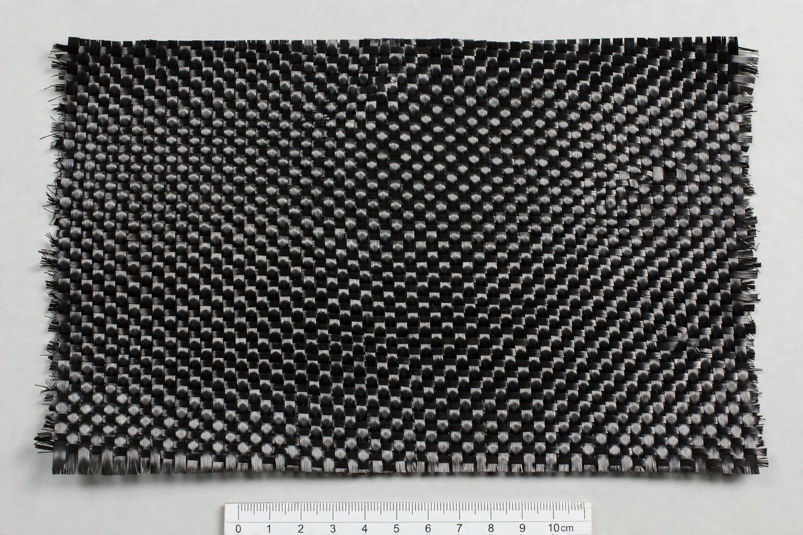

Composite material
From Wikipedia, the free encyclopedia

A composite material is a material made from two or more constituent materials with significantly different physical or chemical properties that, combined, produce characteristics different from the individual components — typically a strong, stiff reinforcement (fibres or particles) embedded in a weaker matrix that binds and protects it. Mud brick, plywood, concrete and fibreglass are ancient and everyday composites; carbon-fibre-reinforced polymer is the modern archetype, with specific strength far beyond steel.
Types and mechanics
Fibre-reinforced polymers (glass, carbon, aramid/Kevlar in epoxy or polyester) dominate advanced uses — aircraft structures (the Boeing 787 and Airbus A350 are majority-composite airframes), wind-turbine blades, racing cars, prosthetics. Metal- and ceramic-matrix composites serve hotter duties; sandwich panels (honeycomb or foam cores) maximise stiffness per weight. Properties are anisotropic by design: fibres are laid along load paths, making design and failure analysis a discipline of its own (delamination being the characteristic failure).
History and issues
Wattle-and-daub, Mongol composite bows and Japanese laminated blades show the principle's antiquity; the modern era began with Bakelite and fibreglass in the 1930s–40s and carbon fibre in the 1960s (Royal Aircraft Establishment). Composites' Achilles heel is end-of-life: thermoset composites resist recycling, and wind-blade waste mountains have driven research into recyclable resins and thermoplastic matrices.